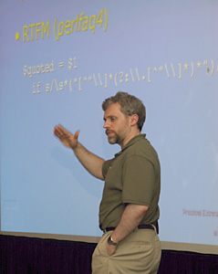

|  |
Since the early 1990s Dr. Damian Conway has worked in the Computer Science and Software Engineering department of Monash University, Melbourne, Australia, where he is now an Associate Professor. Over the course of his research he discovered the Perl programming language and neither Damian nor Perl have been the same since.
In between 1997 and 2000 Damian became a regular fixture teaching at various Perl conferences, contributed a wealth of modules to CPAN (the Comprehensive Perl Archive Network), and won for three straight years the Larry Wall Award for Practical Utility. (Damian subsequently removed himself from competition in future years on account of his self-described "unfair weirdness.") He also wrote "Object Oriented Perl" (Manning, 1999, ISBN 1884777791), which was quickly recognized as the definitive book on the subject.
In the middle of 2000 several influential people in the Perl community decided to raise the funds to buy out Damian's contract from Monash University for a year so that Damian could devote all of his considerable energies towards the further promotion of the Perl language. The fundraising was done under the mantle of the newly formed "Yet Another Society" and through a combination of corporate contributions and grassroots individual donations the US$80,000 needed was raised in only 2 weeks. Damian became Larry's "right hand man" in the Perl 6 effort, he continued with his many CPAN contributions, and he has circled the world -- several times -- to give free talks to promote the Perl language. More information regarding Damian's YAS Fellowship can be found at http://www.yetanother.org/damian/about.html
While Damian's YAS Fellowship was scheduled only for the year of 2001, over the course of the year it became obvious to everyone that this experiment was successful and YAS readied itself to fund Damian for 2002, too. Also, the YAS Fellowship was extended to provide for Larry Wall and Dan Sugalski. These three remarkable people form the core team for the creation of Perl 6, the major reworking of the Perl language which is currently underway. More information regarding the 2002 YAS Fellowships (renamed Perl Foundation Development Grants) can be found at http://www.perlfoundation.org/gc/grants/benefits.html . Though the Perl Foundation no longer supports Damian's work on a full time basis he remains very active in the organization. His continued devotion to the development of the Perl language and community is incredibly valuable and he volunteers it freely.
Damian has often been called the "Mad Scientist of Perl." He often refers to himself as the "Court Jester of Perl." Certainly, his public talks are wild, zany and hillarious enough for him to earn either nickname. But he takes this approach on purpose: humour is a good way to get someone's attention, and once Damian has your attention he can teach you something new about Perl. And that's a job he's very serious about.
Damian's own web site is http://damian.conway.org/
Back to Damian Conway main page